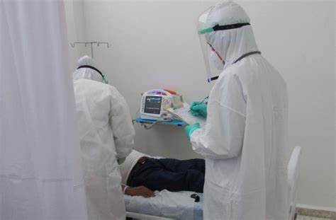

قسم الباطنه
يقوم الطبيب بتشخيص جميع عظام الجسم والمفاصل مثل عظام مشط القدم وعظمه القص وعظمه الكعبره وعظام الرسخ وجميع العظام وعلاجها باحدث عمليات اليزر
مواعيد العياده يوميا من 7 ص الي 5 م
واطباء هذا القسم دكتور عادل خميس استاذ جراحات العظام باكاديميه العسكريه
